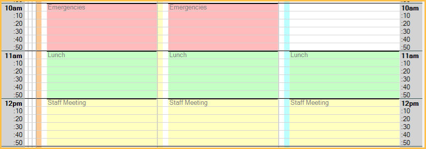
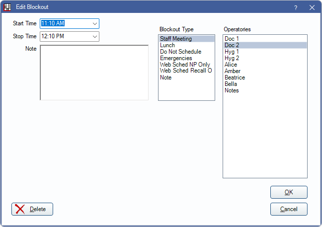
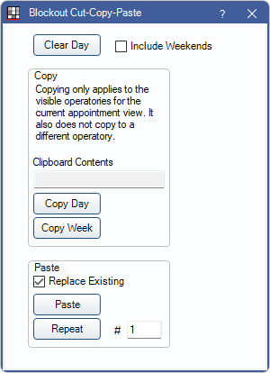
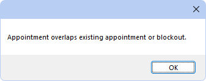

Blockouts
Blockouts are visual indicators on the schedule that can be used to indicate times for lunches, meetings, specific Appointment Types, etc.
In the Appointments Module, Blockouts show as colored areas.
Blockouts can allow scheduling appointments over them or can block scheduling an appointment.
The Blockouts permission is required to add, edit, cut/copy/paste, and delete Blockouts that are not flagged as Disable Cut/Copy/Paste (DC) or No appointment scheduling (NS). Users without the permission can only add, edit, and delete Blockouts flagged as DC and NS.
Blockouts cannot overlap. When adding a blockout that would overlap an existing Blockout, you will get a message stating Blockouts cannot be overlapped, or you will be prompted to remove the existing blockouts. This behavior is determined by the Allow 'Block appointment scheduling' Blockouts to replace conflicting Blockouts preference.
Define blockout types, scheduling preferences, editing preferences, and colors in Definitions: Blockout Types. Define the font color in Definitions: Appointment Colors. To use outlines instead of solid blocks of color, set the Use solid Blockouts instead of outlines on the Appointments Module preference.
To view or select a Blockout option, right-click on the operatory in the schedule.
- Edit Blockout: Change an existing Blockout.
- Cut Blockout: Remove an existing Blockout from the schedule, but retain it in memory.
- Copy Blockout: Copy an existing Blockout to the clipboard.
- Paste Blockout: Insert a cut or copied Blockout in the time and operatory indicated by the mouse.
- Delete Blockout: Permanently remove a Blockout.
- Add Blockout: Create a new Blockout.
- Blockout Cut-Copy-Paste: Quickly copy and paste Blockouts by day or week. See below.
- Clear All Blockouts for Day: Remove all Blockouts for the current day. A confirmation message will show. This option is not available when Clinics is enabled.
- Clear All Blockouts for Day, Op only: Removes all Blockouts for the day in the selected operatory only. A confirmation message will show.
- Clear All Blockouts for Day, Clinic only: Removes all Blockouts for the day for the selected clinic only. A confirmation message will show.
- Edit Blockout Types: Quickly jump to Definitions: Blockout Types to set up Blockout Types.
Add or Edit a Blockout
On the appointment schedule, right-click on a time block in an operatory, then click Edit Blockout or Add Blockout. Edit Blockout is only enabled when you right-click on an existing Blockout.
Start/Stop Time: Both times default to the time clicked on the schedule. Manually change times or click the dropdown to select an option. You are not required to use 30 minute increments. If manually entering, use the format 00:00 AM.
Note: Optional text that shows under the Blockout label. This text box has right-click options (Right Click Text Box).
Blockout Type: Determines the Blockout text, scheduling, and editing preferences, and color. Customize options in Definitions, Blockout Types.
Operatories: The operatories the Blockout will apply to. To select multiple Operatories, press Ctrl while clicking. If using Clinics, only operatories assigned to the clinic selected in the main menu are options.
When blockouts with the same type are added to multiple operatories at once, they become connected. Deleting or replacing a blockout in one operatory will also delete or replace any Blockouts that are connected.
Blockout Cut-Copy-Paste
Use this tool to copy and paste Blockouts for a week or day. Changes only apply to the visible operatories for the current appointment view. Blockout Types with Disable Cut/Copy/Paste checked in Definitions are not included.
- In the Appointments Module, move the schedule to the day you want to act on.
- Right-click on the schedule and select Blockout Cut-Copy-Paste. 
- Select an option. Clear Day: Remove all Blockouts on the selected day (daily or weekly view).Note: When Clinics is enabled Clear Day will only clear the day of the selected clinic.
Copy Day/Paste: Once one day's Blockouts are set up, copy and paste it to other days.
- Click Copy Day. The window will close.
- Right-click on the day you want to paste to, and select Blockout Cut-Copy-Paste again. The copied date will show.
- Click Paste.
Copy Week/Paste: Once an entire week's Blockouts are set up, copy and paste to other weeks.
- To include weekends in the copy, check Include Weekends.
- Click Copy Week. The window will close.
- Right-click on the week you want to paste to, and select Blockout Cut-Copy-Paste again. The copied date range will show.
- Click Paste.
Copy/Repeat: Copy and paste one day or one week repeatedly into the future.
- Copy the day or week.
- On the first day/week you would like to paste to repeatedly, right-click and select Blockout Cut-Copy-Paste again.
- In the # box next to Repeat, enter the number of days/weeks in the future you would like to paste the Blockouts, such as 365 days or 52 weeks.
- Click Repeat.
Replace Existing: If checked, the day or week being pasted/repeated will replace any existing Blockouts. If unchecked, existing Blockouts will not be replaced, and the paste process will stop and go no further than the first conflicting Blockout..
Hint: To clear multiple days or weeks, create one blank day or week, make sure Replace Existing is checked, then Copy/Repeat.
Block Scheduling
Block Scheduling can be set up to be enforced by Appointment Types:
- Create Blockout Types in Definitions: Blockout Types.
- Optional: in Appointment Types Appointment Types, enable New appointments prompt for appointment type. This ensures users will be prompted to select an Appointment Type when creating a new appointment.
- Click add to create new Appointment Types and assign to Blockout Types or double-click existing Appointment Types to edit:
- In the Appointments are allowed on these Blockout Types, highlight the Blockout Types to allow the Appointment Type to be Scheduled.
- To match the appointment color with the Blockout, assign a color to the Blockout Type.
- Add Blockouts to the Appointments Module schedule.
- After setting up Blockouts, use the Blockout Cut-Copy-Paste to quickly copy Blockouts to another day or week.
Once Blockouts are created and Appointments Types are set up, users will only be able to place appointments on the Blockouts where the Appointment Type is allowed or on areas of the schedule there is no Appointment Type. Appointments with no Appointment Type can be scheduled on any Blockouts that allow scheduling.
Appointment Overlaps
When scheduling an appointment, users may receive the message shown below.
The message appears when scheduling an appointment over a Blockout with Block appointments scheduling enabled. It may also appear when attempting to schedule an appointment at the same time as an existing appointment in the same operatory when Appointments allow overlap is disabled in Preferences.